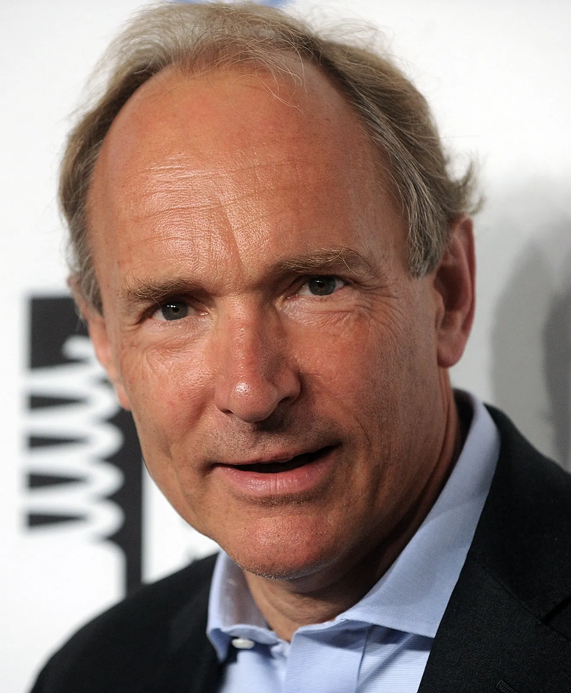

Para refletir
Inclusão digital baseada em direitos digitais

Tim Berners-Lee
“
Hoje, a World Wide Web completa 29 anos (2018). Este ano registra um marco na história da web: pela primeira vez, cruzaremos o ponto de inflexão em que mais da metade da população mundial estará online.
Quando compartilho essa notícia empolgante com as pessoas, costumo receber uma de duas reações preocupadas:
- Como conectar a outra metade do mundo?
- Temos certeza de que o resto do mundo quer se conectar à web que temos hoje?